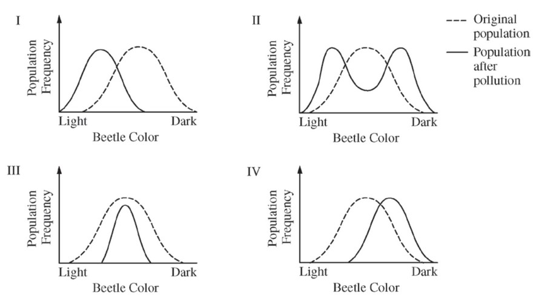

In a hypothetical population of beetles, there is a wide variety of color, matching the range of coloration of the tree trunks on which the beetles hide from predators. The graphs below illustrate four possible changes to the beetle population as a result of a change in the environment due to pollution that darkened the tree trunks.

Which of the following includes the most likely change in the coloration of the beetle population after pollution and a correct rationale for the change?